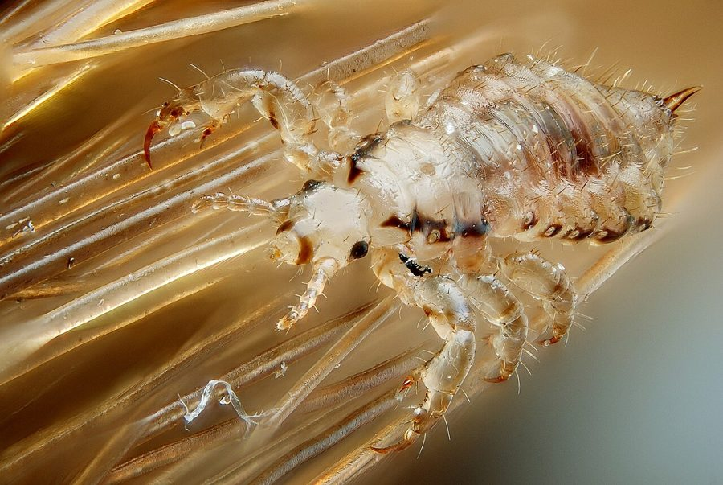

जूँHead Louse
Pediculus humanus capitis · Pediculidae · INS-0115

- Scientific nameवैज्ञानिक नाम
- Pediculus humanus capitis Linnaeus, 1758
- Familyकुल
- Pediculidae
- Hindiहिंदी
- जूँ
- Local namesस्थानीय नाम
- joon, ju, jun, head louse, sir ki joon
- Status hereयहाँ की स्थिति
- native
- Movementआवागमन
- Resident, here all year
- IUCNIUCN
- not evaluated
- Reviewसमीक्षा
- audited and independently read
When to look कब देखें
Present all year.साल भर मौजूद।
Uses and possibilities उपयोग और संभावनाएँ
Drawn from the documented uses in the profile below, where each is labelled traditional, current or a research lead. All uses →
जूँ / Head Louse
Pediculus humanus capitis Linnaeus, 1758 — Pediculidae
जूँ — सिर के बालों में रहने वाली एक गहरे रंग की, सिगरेट की राख जितनी लंबी, सपाट बग। यह आपके सिर की खून चूसती है और ख़ुजली कराती है। इसके अंडे (निट) बालों में चिपके रहते हैं। गरीब और अमीर दोनों परिवारों को जूँ लग सकती हैं, पर भीड़-भाड़ वाले घरों, स्कूलों और झुग्गियों में ज़्यादा आम है। सिर खुजलाने से घाव हो जाते हैं और संक्रमण हो सकता है।
Quick Identification त्वरित पहचान
| Feature | Description |
|---|---|
| Size | Body length 2–4 mm; nymphs smaller |
| Colour | Dark brown to tan; appears grey when live |
| Shape | Flattened, body wider at the rear |
| Head | Small, with mouthparts modified for piercing; antennae present |
| Thorax | Fused with head |
| Legs | Six, with strong claws for gripping hair |
| Eyes | Absent or reduced to simple eye spots |
| Nits (eggs) | Oval, white or tan, firmly attached to hair shaft with a cap; 0.7–0.8 mm |
Field tip: Itching of the scalp and visible small brown insects in the hair, particularly at the nape and behind the ears. White or tan egg cases (nits) firmly attached to hair shafts are diagnostic. The insects can be seen if the hair is parted under good light.
हिंदी — कैसे पहचानें: सिर में तेज़ खुजली, विशेषकर गर्दन के पीछे। बालों में छोटे भूरे कीड़े दिख जाएँ। बालों पर सफ़ेद अंडे चिपके हों।
Morphology आकारिकी
Biometrics:
| Measurement | Range |
|---|---|
| Adult body length | 2.0–4.0 mm |
| Nymph length | 1.0–2.5 mm |
| Nit length | 0.7–0.8 mm |
| Nit width | 0.3–0.4 mm |
Structure: Body dorsally flattened and elongate, somewhat oval. Head small, with minute antennae, compound eyes absent, replaced by simple light-sensitive spots; mouthparts are modified into a beak with a stylet for piercing. Thorax fused with head. Abdomen segmented, with tracheal spiracles along the sides. Legs are short and robust, each ending in a single claw and a thumb-like pad, perfectly adapted for gripping and moving along hair shafts. Tarsus length varies slightly from front to back, and this is used in taxonomic identification.
Eggs (nits): Oval, with a cap on one end through which the nymph emerges. The egg is cemented to the hair shaft with a water-resistant adhesive and does not wash off easily.
Behaviour & Ecology व्यवहार और पारिस्थितिकता
An obligate parasitic insect found exclusively on human scalp hair. The louse feeds on blood from tiny capillaries in the scalp, piercing the skin with its stylet. It spends its entire life on the host, moving from hair to hair but rarely leaving the scalp except during grooming. Transmission is through direct head-to-head contact (the most common route), occasionally through sharing of combs, brushes, hats, or bedding. The louse cannot jump or fly and must crawl between hosts.
Females lay 3–10 nits per day, usually attached to hair near the scalp, often behind the ears and at the nape of the neck where it is warm and humid. Nymphs hatch in 6–10 days and become adults in 9–12 days, with three nymphal stages. The entire lifespan is 3–4 weeks.
The itching is caused by the salivary secretions of the louse and the immune response of the scalp. Scratching may cause secondary bacterial infections.
हिंदी: सिर पर ही रहता है, शरीर के दूसरे हिस्से पर नहीं। सिर के खून चूसता है। सिर्फ सर-से-सर संपर्क से फैलता है। बालों में अंडे चिपकाता है; दो हफ़्ते में उनसे जूँ निकल आती है।
Life Cycle / Phenology जीवन चक्र
| Stage | Duration | Notes |
|---|---|---|
| Egg (nit) | 6–10 days | Attached to hair at scalp level; temperature-dependent |
| Nymph instar 1 | 2–3 days | Immediately begins feeding |
| Nymph instar 2 | 2–3 days | Grows, molts |
| Nymph instar 3 | 2–3 days | Final nymphal stage |
| Adult | 15–30 days | Females lay eggs daily; males mate repeatedly |
| Total lifespan | 3–4 weeks | Off the host, survival is only a few hours to 2 days |
Host Plants or Prey आहार
Host: Exclusively human (Homo sapiens); a subspecies exists on other primates but is not known in India.
Feeding: Blood only. Each feed lasts 15–30 minutes, during which the louse consumes 0.001 mL of blood.
Predators / Natural Enemies शत्रु
None recorded; the louse is protected on the human scalp by hair coverage and the host's limited ability to scratch effectively.
Agricultural / Human Relevance कृषि प्रासंगिकता
What it does to people. Head lice cause significant discomfort through persistent itching of the scalp, which may be so severe that affected individuals, particularly children, lose sleep and concentration. The itching is caused by an allergic reaction to louse saliva and faeces. Scratching the scalp causes small wounds that may become secondarily infected with bacteria (Staphylococcus aureus, Streptococcus pyogenes), leading to pyoderma (skin infection) and possibly more serious infections.
Head lice are socially stigmatizing in many communities and are associated with poor hygiene (though they affect all socioeconomic groups and are especially common in crowded schools, orphanages, and refugee camps). The presence of lice may lead to social exclusion of children and psychological stress.
Head louse infestations are not a vector of serious disease, unlike body lice, which transmit typhus, trench fever, and louse-borne relapsing fever. Head lice do not transmit disease.
Prevention and control: (1) regular hair washing with shampoo; (2) use of a fine-toothed comb to remove nits and adult lice; (3) treatment of the scalp with pediculicides (insecticidal shampoos containing permethrin, malathion, or carbaryl) when infestation is present; (4) hot water washing of bedding, pillows, and hats; (5) combs and brushes should be soaked in hot water or replaced; (6) screen contacts — inform schools and close contacts so they can check for lice; (7) repeat treatment 7–10 days later to catch newly hatched nymphs.
Not medical advice: This atlas does not provide medical guidance. If a person is infested with head lice, a healthcare provider or school health worker can recommend appropriate treatment and prevention measures. Information here is for understanding the biology and prevention, not treatment.
Traditional and Ethnobotanical Use: many plant-based remedies have been tried, including neem oil, coconut oil with camphor, and sesame oil, with variable effectiveness. None have been scientifically validated.
Today. Head lice remain a common public health nuisance in schools and crowded homes. Treatment resistance to some conventional insecticides has been reported in some populations.
Research direction (a lead, not a result). The prevalence of head lice infestation in different age groups, communities, and school settings in eastern UP has not been systematically documented.
हिंदी: सिर में तेज़ खुजली, घाव हो जाते हैं, संक्रमण हो सकता है। यह रोग नहीं फैलाता। रोकथाम: बालों को नियमित रूप से धोना, सघन दाँतों वाली कंघी से बालों को कंघी करना, सिर पर कीटनाशक तेल लगाना (डॉक्टर की सलाह से), कपड़े और तकिए को गर्म पानी से धोना।
Expected Locally स्थानीय रूप से अपेक्षित
Not a field record. Written from published accounts for eastern Uttar Pradesh. No confirmed local sighting yet — if you have seen it, that is what the atlas needs.
अभी तक स्थानीय पुष्टि नहीं। यह विवरण प्रकाशित स्रोतों से है, किसी अवलोकन से नहीं।
Expected throughout the district in all communities, with particularly high prevalence in crowded schools, urban slums, and orphanages. Children aged 5–15 years are most commonly affected. A specimen of a louse or nits in hair, examined under magnification, is a confirmed record.
Distribution वितरण
Global range: Worldwide in all human populations; found wherever humans live.
In India: Universal; present in all regions and communities.
In Uttar Pradesh: Widespread in schools and crowded homes.
In Basti district / eastern UP: Expected in all schools and many homes.
Research Questions शोध प्रश्न
- What is the prevalence of head lice infestation in local schools, and does it vary by age or class? / स्कूलों में कितने बच्चों को जूँ है? — Screen children with parental consent.
- How effective are different home remedies (neem oil, coconut oil) compared to commercial insecticides? — Controlled trial.
- What is the rate of reinfestation after treatment, and how is it related to household crowding? — Follow-up study.
- Do head lice populations show resistance to commonly used insecticides? — Susceptibility testing.
- Does social stigma associated with lice affect school attendance and learning? — Qualitative interview study.
Similar Species मिलती-जुलती प्रजातियाँ
| Species | How to tell apart | हिंदी |
|---|---|---|
| Body louse (Pediculus humanus humanus) | Larger (2.5–4.5 mm); lives in clothing seams and bedding; causes disease transmission | कपड़ों में, बड़ा |
| Pubic louse (Pthirus pubis) | Much smaller (1–1.5 mm); broader, crab-like body; found in pubic region | बहुत छोटा, केकड़े जैसा |
| Dandruff or dirt | Non-living; does not attach to hair with cement; washes off | जीवित नहीं; धुल जाता है |
Field rule: Brown insects 2–4 mm long in scalp hair, with white or tan eggs firmly cemented to hair shafts, and a history of scalp itching, are head lice.
Taxonomy & Classification वर्गीकरण
Original description. Linnaeus first described the human head louse in 1758 in Systema Naturae (10th edition) as Pediculus humanus capitis. The separation of the head louse from the body louse as a distinct subspecies was formalized later by entomologists.
Subspecies. Pediculus humanus includes two subspecies: P. h. capitis (head louse) and P. h. humanus (body louse). These are not fully reproductively isolated and may interbreed, but they occupy different ecological niches on the human body.
Family and order placement. Pediculidae (lice), order Phthiraptera (parasitic lice). The order is entirely composed of ectoparasitic insects of birds and mammals. Phthiraptera is thought to be sister to the Psocoptera (bark lice).
Phylogenetic notes. Lice are highly derived Hemiptera with modifications for parasitic life: loss of wings, loss of eyes, and specialization for clinging to hair and feeding on blood.
IUCN status rationale. Not evaluated. Abundant wherever humans live.
Photo Gallery फोटो गैलरी
Photos needed आवश्यक फोटो
- [ ] Head louse and nits on a hair shaft (बाल पर)
- [ ] Close-up of the louse showing legs and body shape (करीब से)
- [ ] Nits in hair, showing the cap (अंडे)
No photos yet — add field photos to media/species/head_louse/ and run node scripts/sync_photos.js.
References संदर्भ
- Linnaeus, C. (1758). Systema Naturae, 10th edition. Salvius, Stockholm. [original description]
- Nutting, W.B. (1976). The biology of the human head louse, Pediculus humanus capitis (De Geer). International Journal of Dermatology 15: 340–349.
- Ko, C.J. & Elston, D.M. (2004). Pediculosis. Journal of the American Academy of Dermatology 50: 1–12.
- Chosidow, O. (2000). Scabies and pediculosis. Lancet 355: 819–826.
- Srivastava, K.C., Srivastava, S., Pradhan, K.P., Mohanty, N.C. & Singh, G. (2009). Epidemiology of pediculosis capitis in school-going children of Delhi. Indian Journal of Dermatology, Venereology and Leprology 75: 310–311.
- GBIF Occurrence Data — Pediculus humanus capitis, India (2026).
Source file: species/fauna/insects/head_louse.md